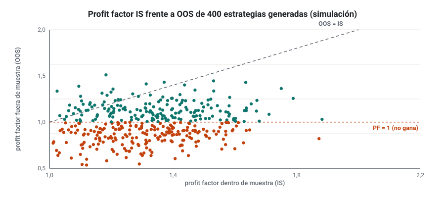
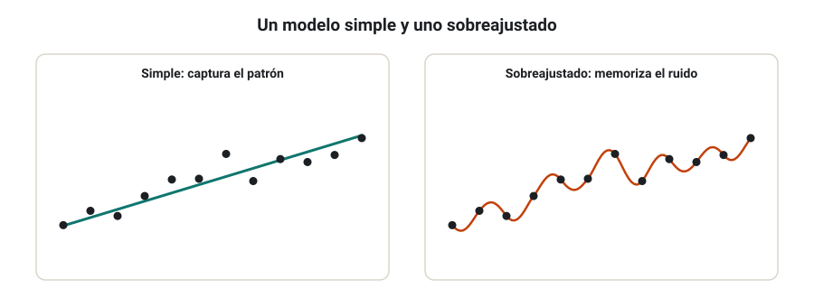
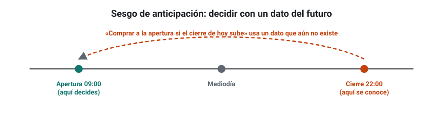
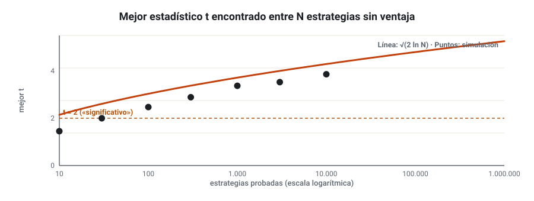
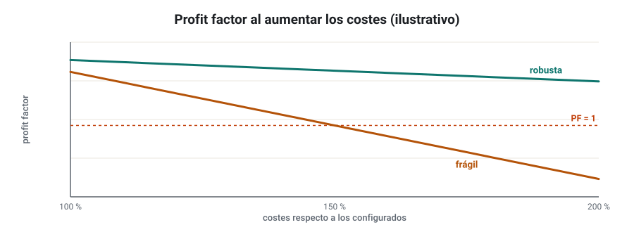
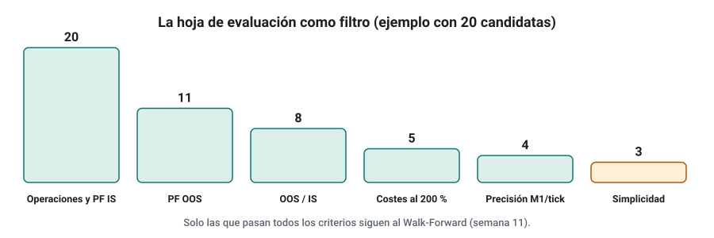

SEMANA 10 · ETAPA 3 · INVESTIGACIÓN Y VALIDACIÓN
Backtesting y sobreoptimización
Presentación de la semana
Un backtest no es una prueba de que una estrategia funcione: es una simulación con muchas suposiciones, y una herramienta que se puede engañar con facilidad. Esta semana aprenderás a diseñar backtests honestos, a separar de verdad los datos dentro y fuera de muestra, a reconocer la sobreoptimización y los sesgos que la producen, y a medir cuánto depende una estrategia de los costes. Terminarás construyendo tu hoja de evaluación: el primer filtro serio del protocolo de validación que completarás en las semanas 11 y 12.
Objetivos
Al terminar la semana sabrás:
- Configurar un backtest honesto: precisión, costes y periodos.
- Usar correctamente los datos dentro y fuera de muestra.
- Reconocer la sobreoptimización, los grados de libertad excesivos y el sesgo de anticipación.
- Cuantificar el sesgo de selección cuando pruebas muchas estrategias.
- Medir la sensibilidad de una estrategia a los costes.
- Cribar candidatas con una hoja de evaluación objetiva.
Plan de la semana (22–25 horas)
| Bloque | Horas | Qué harás |
|---|---|---|
| Clases | 6 | Seis lecciones: lectura y vídeos |
| Prácticas | 12 | Retester, pruebas de costes y criba de candidatas |
| Investigación y evaluación | 4 | Investigación I-10, entrega y examen |
| Revisión y planificación | 2 | Glosario, cuaderno y plan de la semana 11 |
Qué necesitas
- SQX con las estrategias de las semanas 6 a 8 y tus datos revisados en la semana 9.
- Tu registro de pruebas.
- Tu plantilla de métricas.
Criterio para desbloquear la semana 11
Tener en estado APROBADO, con un 80 % o más cada uno:
- ☐ Examen de la semana 10
- ☐ Entrega práctica: hoja de evaluación aplicada a 20 candidatas
- ☐ Investigación I-10: los ocho pasos documentados
Diseño de un backtest honesto: precisión, costes y periodos
Formato: clase de 40 minutos · Lectura: 35 minutos
Qué es honesto
Un backtest es honesto cuando todo lo que la estrategia usa para decidir estaba disponible en ese momento y todo lo que paga en real está incluido. Las tres decisiones clave son la precisión, los costes y los periodos.
Precisión
La precisión dice con qué detalle simula el programa lo que pasa dentro de cada vela. En SQX hay varios niveles, de más rápido a más preciso: solo la temporalidad seleccionada, simulación con datos de 1 minuto, y datos de tick reales (con spread fijo o con el spread real, si los datos lo incluyen).
- Para generar: una precisión rápida está bien, siempre que la confirmes después.
- Para validar: usa siempre la máxima precisión que tengas disponible (M1 o tick). Si una estrategia cambia mucho al subir la precisión, depende de lo que pasa dentro de la vela y es sospechosa (semana 9).
Costes
Configura los cuatro costes de la semana 5 (spread, comisión, deslizamiento y swap) con valores conservadores: un 20–50 % por encima de lo que mediste. En la lección 5 medirás cuánto aguanta cada estrategia.
Periodos
- Lo más largo posible, con distintas situaciones de mercado: tendencias, rangos, crisis, volatilidad alta y baja.
- Sin cortar a medida: no elijas el inicio o el final del periodo según el resultado.
- Con un periodo fuera de muestra que el proceso de selección no toque (lección 2).
La lista de comprobación
Antes de dar por bueno un backtest, comprueba: datos revisados y alineados con el broker, precisión de M1 o superior, costes conservadores, tamaño fijo, periodo completo y periodo OOS sin tocar.
Comprueba que lo has entendido
- ¿Qué dos condiciones hacen honesto un backtest?
- ¿Qué estrategias son más sensibles a la precisión del backtest?
- ¿Por qué no se debe elegir el periodo de prueba según el resultado?
In-sample y out-of-sample
Formato: clase de 35 minutos · Lectura: 30 minutos
La regla de oro
Los datos fuera de muestra solo son fuera de muestra si no influyen en ninguna decisión antes de la prueba final. En cuanto miras el resultado OOS para elegir, cambiar o descartar estrategias, ese periodo pasa a ser dentro de muestra, aunque el programa lo siga llamando OOS.
Lo que suele pasar fuera de muestra
Si generas miles de estrategias y comparas sus resultados IS con los OOS, verás un patrón muy constante: las mejores en IS empeoran fuera de muestra, y muchas pasan a perder. Es la regresión a la media: parte de su resultado IS era suerte, y la suerte no se repite.

Cómo dividir los datos
| Esquema | Cómo | Ventaja | Inconveniente |
|---|---|---|---|
| OOS al final | IS antiguo, OOS reciente | Prueba en el mercado más parecido al actual | Un solo periodo de prueba |
| OOS al principio | OOS antiguo, IS reciente | Construye con los datos más actuales | Prueba en un mercado que quizá ya no existe |
| Varios bloques OOS | Alterna bloques IS y OOS | Prueba en varias situaciones | Más complejo de gestionar |
Una proporción habitual es un 70–80 % IS y un 20–30 % OOS. En la semana 11 verás el Walk-Forward, que lleva esta idea mucho más lejos.
Comprueba que lo has entendido
- ¿Cuándo deja un periodo OOS de serlo?
- ¿Por qué las mejores estrategias IS empeoran fuera de muestra?
- Propón un criterio OOS de aceptación y explica por qué lo fijas antes.
Sobreoptimización, grados de libertad y sesgo de anticipación
Formato: clase de 40 minutos · Lectura: 35 minutos
Sobreoptimización
Sobreoptimizar (overfitting o curve fitting) es ajustar una estrategia tanto a los datos históricos que acaba describiendo su ruido en lugar de su patrón. Es como memorizar las respuestas de un examen en lugar de aprender la materia: sacas un 10 en ese examen y suspendes cualquier otro.

Grados de libertad
Cada parámetro, condición o filtro es un grado de libertad: una forma más que tiene la estrategia para adaptarse a los datos. Reglas prácticas:
- Pocas condiciones de entrada (2 o 3) y pocos parámetros.
- Muchas operaciones por cada grado de libertad: como orientación, al menos 30–50 operaciones por parámetro.
- Parámetros «redondos» y razonables: una media de 50 es más creíble que una de 47 si el resultado apenas cambia.
Señales de sobreoptimización
- Una curva demasiado perfecta.
- Parámetros muy precisos y extraños.
- Mucha diferencia entre IS y OOS.
- El resultado cambia mucho al mover un parámetro un poco (semana 12).
- Reglas sin explicación lógica.
El sesgo de anticipación
El sesgo de anticipación (look-ahead bias) aparece cuando el backtest usa información que en el momento de decidir todavía no existía. Ejemplos:
- Usar el cierre de la vela actual para decidir entrar a su apertura.
- Usar el máximo del día para una decisión tomada a mediodía.
- Usar datos revisados (por ejemplo, un dato económico corregido meses después) como si se conocieran el día de su publicación.
- Usar la composición actual de un índice para el pasado (que también es sesgo de supervivencia).

SQX evita la mayoría de estos errores en las estrategias que genera, pero puedes introducirlos tú con datos mal preparados, con indicadores externos o al traducir una idea a mano. Si una estrategia parece demasiado buena, busca primero un sesgo de anticipación.
Comprueba que lo has entendido
- Explica la sobreoptimización con un ejemplo que no sea de trading.
- Una estrategia tiene 8 parámetros y 240 operaciones. ¿Qué opinas?
- Pon un ejemplo de sesgo de anticipación.
Sesgo de selección y minería de datos
Formato: clase de 40 minutos · Lectura: 35 minutos
El problema
En la semana 4 viste que, si pruebas 100 estrategias sin ventaja, unas 5 tendrán t > 2 por azar. El Builder no prueba 100: prueba cientos de miles. Y tú eliges la mejor. La pregunta correcta no es «¿es bueno este resultado?», sino «¿es bueno este resultado para ser el mejor de todos los que probé?».
El máximo del azar
Si pruebas N estrategias sin ninguna ventaja, el mejor estadístico t que encontrarás crece con N. Una aproximación sencilla (algo por encima del valor real, así que prudente) es:
| Estrategias probadas | Mejor t esperado solo por azar (valor medio) | Aproximación √(2 ln N) |
|---|---|---|
| 10 | ≈ 1,5 | 2,1 |
| 100 | ≈ 2,5 | 3,0 |
| 10.000 | ≈ 3,9 | 4,3 |
| 1.000.000 | ≈ 4,9 | 5,3 |

Por eso un t de 3 en la mejor de 100.000 estrategias no significa nada: es menos de lo que daría el puro azar. Investigadores académicos como Harvey, Liu y Zhu (2016) propusieron exigir, en finanzas, un t mayor que 3 incluso con pocas pruebas, y Bailey y López de Prado (2014) desarrollaron el Sharpe deflactado, que corrige el Sharpe por el número de pruebas.
Qué hacer en la práctica
No puedes evitar probar muchas estrategias: es como funciona el Builder. Lo que sí puedes hacer:
- Anotar cuántas pruebas haces (registro de pruebas, semana 9).
- Exigir más cuantas más pruebas haces: filtros IS más duros y OOS obligatorio.
- Validar con pruebas independientes del proceso de selección: OOS, Walk-Forward, Monte Carlo, otros mercados (semanas 11 y 12).
- Preferir lógicas con explicación a hallazgos sin sentido.
Comprueba que lo has entendido
- ¿Qué mejor t esperarías por azar si pruebas 1.000 estrategias?
- ¿Por qué hay que exigir más cuantas más estrategias pruebas?
- Nombra dos formas prácticas de combatir el sesgo de selección.
Sensibilidad a costes
Formato: clase de 30 minutos · Práctica: 1 hora
La prueba
Vuelve a probar la estrategia en el Retester aumentando los costes: el spread y el deslizamiento al 150 % y al 200 % de lo configurado, por ejemplo. Una estrategia robusta pierde algo de rendimiento; una frágil se hunde.

Cómo interpretarla
- Calcula el coste de equilibrio: el coste por operación a partir del cual la estrategia deja de ganar.
- Compáralo con el coste real: si el margen es menor del doble, la estrategia es frágil.
- Mira el beneficio medio por operación en pips: por debajo de 3–5 veces el coste, cualquier empeoramiento de la ejecución la destruye.
Comprueba que lo has entendido
- ¿Qué es el coste de equilibrio?
- Una estrategia gana de media 4 pips por operación y paga 1,5. ¿Es robusta a los costes?
- ¿Por qué las estrategias de muchas operaciones pequeñas son peligrosas?
Taller: criba de candidatas con hoja de evaluación
Formato: taller guiado de 60 minutos · Práctica: 6–8 horas
La hoja de evaluación
Una hoja de evaluación aplica criterios fijos a cada estrategia y decide si pasa o no, sin opiniones. Construye la tuya en la hoja de cálculo con esta estructura:
| Criterio | Umbral de partida | ¿Pasa? |
|---|---|---|
| Operaciones IS | ≥ 200 | Sí / No |
| Profit factor IS (costes conservadores) | ≥ 1,3 | |
| Profit factor OOS | ≥ 1,15 | |
| PF OOS / PF IS | ≥ 0,6 | |
| Ratio beneficio / drawdown IS | ≥ 3 | |
| Beneficio medio por operación | ≥ 4 veces el coste | |
| Profit factor con costes al 200 % | ≥ 1,05 | |
| Cambio de PF al subir la precisión a M1 o tick | ≤ 10 % | |
| Condiciones de entrada | ≤ 3 | |
| Reglas explicables en dos frases | Sí |

Los umbrales son tuyos: puedes ajustarlos con argumentos, pero antes de evaluar y anotándolo en tu cuaderno.
Paso 1 · Reúne 20 candidatas
De tus proyectos de las semanas 6 a 8, toma las 20 mejores por tu fitness (sin mirar el OOS para elegirlas).
Paso 2 · Pruebas
Para cada una, en el Retester: precisión máxima disponible, costes conservadores, costes al 200 %, y anota las métricas IS y OOS.
Paso 3 · Evalúa
Rellena la hoja. Cuenta cuántas candidatas superan todos los criterios.
Paso 4 · Analiza
¿Qué criterio eliminó a más candidatas? ¿Alguna estrategia que te gustaba cayó? ¿Por qué?
Comprueba que lo has entendido
- ¿Cuántas de tus 20 candidatas pasaron todos los criterios?
- ¿Qué criterio fue el más exigente?
- ¿Cambiarías algún umbral para la próxima vez? ¿Con qué argumento?
Glosario de la semana
| Término | Inglés | Definición |
|---|---|---|
| Coste de equilibrio | Breakeven cost | Coste por operación a partir del cual la estrategia deja de ganar |
| Falso positivo | False positive | Estrategia que parece tener ventaja sin tenerla |
| Hoja de evaluación | Scorecard | Tabla de criterios fijos para aceptar o rechazar estrategias |
| Precisión del backtest | Backtest precision | Detalle con el que se simula lo que ocurre dentro de cada vela |
| Regresión a la media | Regression to the mean | Tendencia de los resultados extremos a acercarse a la media al repetirse |
| Sensibilidad a costes | Cost sensitivity | Cambio del resultado al aumentar los costes |
| Sesgo de anticipación | Look-ahead bias | Uso de información que no estaba disponible al decidir |
| Sharpe deflactado | Deflated Sharpe ratio | Sharpe corregido por el número de pruebas realizadas |
| Sobreoptimización | Overfitting / curve fitting | Ajuste de una estrategia al ruido de los datos históricos |
Ejercicios obligatorios
E1 · Lista de comprobación. Aplica la lista de comprobación de la lección 1 a tu mejor estrategia de la semana 8 y anota qué falla.
E2 · Precisión. Prueba una estrategia con la precisión más rápida y con la más alta disponible. Anota el cambio en profit factor, operaciones y drawdown.
E3 · OOS contaminado. Explica en 100 palabras por qué, si descartas las estrategias que van mal en OOS y te quedas con las demás, ya no tienes un resultado fuera de muestra.
E4 · Grados de libertad. Una estrategia tiene 4 condiciones con 2 parámetros cada una, un stop y un objetivo con 1 parámetro cada uno. ¿Cuántos grados de libertad tiene? ¿Cuántas operaciones pedirías como mínimo con la orientación de la lección?
E5 · Anticipación. Busca el sesgo de anticipación en cada regla: a) «Comprar a la apertura si el cierre de hoy es mayor que el de ayer». b) «Vender a las 12:00 si el mínimo del día está por debajo del de ayer». c) «Comprar si el PIB del trimestre (dato revisado) creció».
E6 · Máximo del azar. Calcula con la aproximación √(2 ln N) el t máximo esperado por azar para 50, 5.000 y 500.000 estrategias. ¿Qué t exigirías a la mejor estrategia de un proyecto de 300.000?
E7 · Costes. Una estrategia tiene 600 operaciones, un beneficio medio de 3,2 pips con un coste de 1,1 pips incluido. ¿Cuál es su coste de equilibrio? ¿Es robusta?
E8 · Umbrales. Justifica cada umbral de tu hoja de evaluación en una frase.
E9 · Regresión a la media. En tus proyectos, toma las 10 mejores estrategias por profit factor IS y calcula la media de su PF IS y de su PF OOS. ¿Cuánto cae?
E10 · Registro. Actualiza tu registro de pruebas con el número total de estrategias probadas en el curso hasta ahora y calcula el t máximo esperado por azar para ese número.
Investigación I-10 y entrega práctica
Investigación I-10 · ¿Predice el profit factor IS el resultado OOS?
Paso 1 · Hipótesis. Ejemplo: «Entre las estrategias que pasan los filtros, la correlación entre el profit factor IS y el OOS es menor que 0,3».
Paso 2 · Fuentes. Cita una fuente sobre sobreajuste o sesgo de selección en estrategias generadas (por ejemplo, los trabajos citados en la lección 4).
Paso 3 · Datos. Los de tus proyectos.
Paso 4 · Diseño. Define cuántas estrategias tomarás (al menos 100), cómo (todas las del databank o una muestra al azar) y qué medirás: correlación, pendiente de la regresión y porcentaje con PF OOS > 1 por grupos de PF IS.
Paso 5 · Generación. Usa un proyecto existente o lanza uno nuevo con OOS reservado.
Paso 6 · Validación. Exporta las métricas IS y OOS de todas las estrategias del databank sin seleccionar.
Paso 7 · Comparación. Gráfico de dispersión PF IS frente a PF OOS, con la recta de regresión y la correlación.
Paso 8 · Conclusiones. ¿Qué te dice el resultado sobre elegir estrategias por su PF IS? ¿Qué criterio usarías en su lugar?
Entrega práctica · Hoja de evaluación aplicada
Qué entregar
| Archivo | Contenido |
|---|---|
CODIGO_S10_ENT |
Hoja de evaluación con los umbrales justificados y las 20 candidatas evaluadas |
CODIGO_S10_SQX |
Las candidatas que pasan todos los criterios, exportadas desde SQX |
CODIGO_S10_INV |
Investigación I-10 con el gráfico de dispersión |
| Ejercicios | E1 a E10 |
Cómo se evaluará
Se valora que los umbrales se fijen y justifiquen antes de evaluar, que las pruebas se hagan con la precisión y los costes indicados y que el análisis del paso 4 sea honesto. No se penaliza que ninguna candidata pase: se penaliza relajar los criterios para que pase alguna.
Examen de la semana 10 · Variante A
Tiempo orientativo: 60 minutos · Puntuación: 100 puntos · Aprobado: 80 puntos · Puedes usar calculadora, pero no el material del curso ni el tutor de IA. Si suspendes, repetirás con otra variante.
Parte A · Opción múltiple (30 puntos, 2 por pregunta)
Parte B · Cálculo (45 puntos, 15 por ejercicio)
B1. Una estrategia tiene un profit factor IS de 1,72 y un OOS de 1,18. Tus criterios son PF OOS ≥ 1,15 y PF OOS / PF IS ≥ 0,6. a) ¿Cumple cada criterio? b) ¿Cuál es el PF OOS mínimo que habría necesitado para cumplir el segundo? c) Comenta el resultado.
B2. Un proyecto probó 250.000 estrategias. a) Calcula con la aproximación √(2 ln N) el t máximo esperado por azar. b) La mejor estrategia tiene 400 operaciones, una media de 6 $ y una desviación de 80 $: calcula su t. c) ¿Es convincente? Justifícalo.
B3. Una estrategia hace 500 operaciones con un beneficio neto de 2.400 pips después de un coste de 1,2 pips por operación. a) Calcula el beneficio medio por operación neto y bruto. b) Calcula el coste de equilibrio. c) ¿Cuántas veces el coste actual es el beneficio bruto medio? ¿Es robusta según la lección 5?
Parte C · Razonamiento (25 puntos)
En un máximo de 250 palabras: explica a alguien que nunca ha usado SQX por qué una estrategia con un backtest espectacular, elegida entre 200.000, probablemente no funcionará en real, y qué pasos le pedirías antes de creerla.